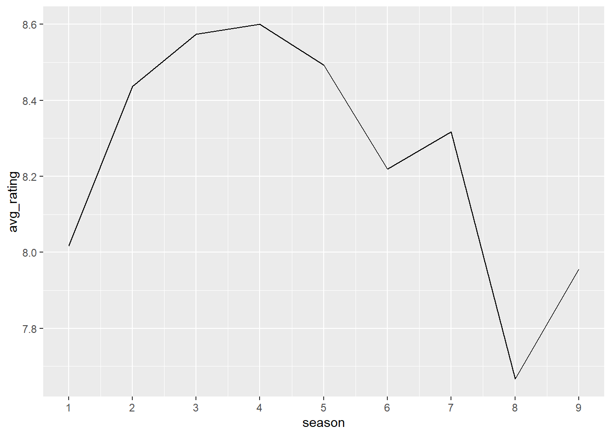
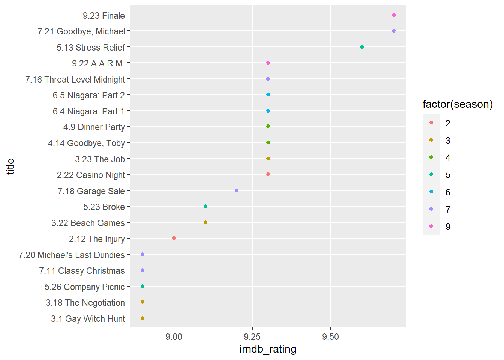

Tidy Tuesday2
priyanka
11/11/2021
library(schrute)
library(tidyverse)## -- Attaching packages --------------------------------------- tidyverse 1.3.1 --## v ggplot2 3.3.5 v purrr 0.3.4
## v tibble 3.1.3 v dplyr 1.0.7
## v tidyr 1.1.4 v stringr 1.4.0
## v readr 2.0.1 v forcats 0.5.1## -- Conflicts ------------------------------------------ tidyverse_conflicts() --
## x dplyr::filter() masks stats::filter()
## x dplyr::lag() masks stats::lag()library(tidymodels)## Registered S3 method overwritten by 'tune':
## method from
## required_pkgs.model_spec parsnip## -- Attaching packages -------------------------------------- tidymodels 0.1.4 --## v broom 0.7.9 v rsample 0.1.0
## v dials 0.0.10 v tune 0.1.6
## v infer 1.0.0 v workflows 0.2.4
## v modeldata 0.1.1 v workflowsets 0.1.0
## v parsnip 0.1.7 v yardstick 0.0.8
## v recipes 0.1.17## -- Conflicts ----------------------------------------- tidymodels_conflicts() --
## x scales::discard() masks purrr::discard()
## x dplyr::filter() masks stats::filter()
## x recipes::fixed() masks stringr::fixed()
## x dplyr::lag() masks stats::lag()
## x yardstick::spec() masks readr::spec()
## x recipes::step() masks stats::step()
## * Search for functions across packages at https://www.tidymodels.org/find/tibble(theoffice)## # A tibble: 55,130 x 12
## index season episode episode_name director writer character text
## <int> <int> <int> <chr> <chr> <chr> <chr> <chr>
## 1 1 1 1 Pilot Ken Kwapis Ricky Ger~ Michael All right ~
## 2 2 1 1 Pilot Ken Kwapis Ricky Ger~ Jim Oh, I told~
## 3 3 1 1 Pilot Ken Kwapis Ricky Ger~ Michael So you've ~
## 4 4 1 1 Pilot Ken Kwapis Ricky Ger~ Jim Actually, ~
## 5 5 1 1 Pilot Ken Kwapis Ricky Ger~ Michael All right.~
## 6 6 1 1 Pilot Ken Kwapis Ricky Ger~ Michael Yes, I'd l~
## 7 7 1 1 Pilot Ken Kwapis Ricky Ger~ Michael I've, uh, ~
## 8 8 1 1 Pilot Ken Kwapis Ricky Ger~ Pam Well. I do~
## 9 9 1 1 Pilot Ken Kwapis Ricky Ger~ Michael If you thi~
## 10 10 1 1 Pilot Ken Kwapis Ricky Ger~ Pam What?
## # ... with 55,120 more rows, and 4 more variables: text_w_direction <chr>,
## # imdb_rating <dbl>, total_votes <int>, air_date <fct>office_ratings <- readr::read_csv('https://raw.githubusercontent.com/rfordatascience/tidytuesday/master/data/2020/2020-03-17/office_ratings.csv')## Rows: 188 Columns: 6## -- Column specification --------------------------------------------------------
## Delimiter: ","
## chr (1): title
## dbl (4): season, episode, imdb_rating, total_votes
## date (1): air_date##
## i Use `spec()` to retrieve the full column specification for this data.
## i Specify the column types or set `show_col_types = FALSE` to quiet this message.office_ratings## # A tibble: 188 x 6
## season episode title imdb_rating total_votes air_date
## <dbl> <dbl> <chr> <dbl> <dbl> <date>
## 1 1 1 Pilot 7.6 3706 2005-03-24
## 2 1 2 Diversity Day 8.3 3566 2005-03-29
## 3 1 3 Health Care 7.9 2983 2005-04-05
## 4 1 4 The Alliance 8.1 2886 2005-04-12
## 5 1 5 Basketball 8.4 3179 2005-04-19
## 6 1 6 Hot Girl 7.8 2852 2005-04-26
## 7 2 1 The Dundies 8.7 3213 2005-09-20
## 8 2 2 Sexual Harassment 8.2 2736 2005-09-27
## 9 2 3 Office Olympics 8.4 2742 2005-10-04
## 10 2 4 The Fire 8.4 2713 2005-10-11
## # ... with 178 more rowsremove_regex <- "[:punct:]|[:digit:]|parts |part |the |and"office_ratings %>%
group_by(season) %>%
summarise(avg_rating = mean(imdb_rating)) %>%
ggplot(aes(season, avg_rating)) +
geom_line() +
scale_x_continuous(breaks = 1:9)
raw_ratings <- office_ratings %>%
mutate(
episode_name = title,
episode_name = episode_name,
episode_name = episode_name,
imdb_rating
)office_info <- schrute::theoffice %>%
mutate(
season = as.numeric(season),
episode = as.numeric(episode),
episode_name = str_to_lower(episode_name),
episode_name = str_remove_all(episode_name, remove_regex),
episode_name = str_trim(episode_name)
) %>%
select(season, episode, episode_name, director, writer, character)characters <- office_info %>%
count(episode_name, character) %>%
add_count(character, wt = n, name = "character_count") %>%
filter(character_count > 800) %>%
select(-character_count) %>%
pivot_wider(
names_from = character,
values_from = n,
values_fill = list(n = 0)
)creators <- office_info %>%
distinct(episode_name, director, writer) %>%
pivot_longer(director:writer, names_to = "role", values_to = "person") %>%
separate_rows(person, sep = ";") %>%
add_count(person) %>%
filter(n > 20) %>%
distinct(episode_name, person) %>%
mutate(person_value = 1) %>%
pivot_wider(
names_from = person,
values_from = person_value,
values_fill = list(person_value = 0)
)office <- office_info %>%
distinct(season, episode, episode_name) %>%
inner_join(characters) %>%
inner_join(creators) %>%
inner_join(raw_ratings %>%
select(episode_name, imdb_rating))## Joining, by = "episode_name"
## Joining, by = "episode_name"
## Joining, by = "episode_name"raw_ratings %>%
group_by(season) %>%
summarise(avg_rating = mean(imdb_rating)) %>%
ggplot(aes(season, avg_rating)) +
geom_line() +
scale_x_continuous(breaks = 1:9)
raw_ratings %>%
arrange(desc(imdb_rating))%>%
mutate(title = paste0(season,".", episode," ",title),
title = fct_reorder(title, imdb_rating)) %>%
head(20)%>%
ggplot(aes(title, imdb_rating, color = factor(season))) +
geom_point() + coord_flip()